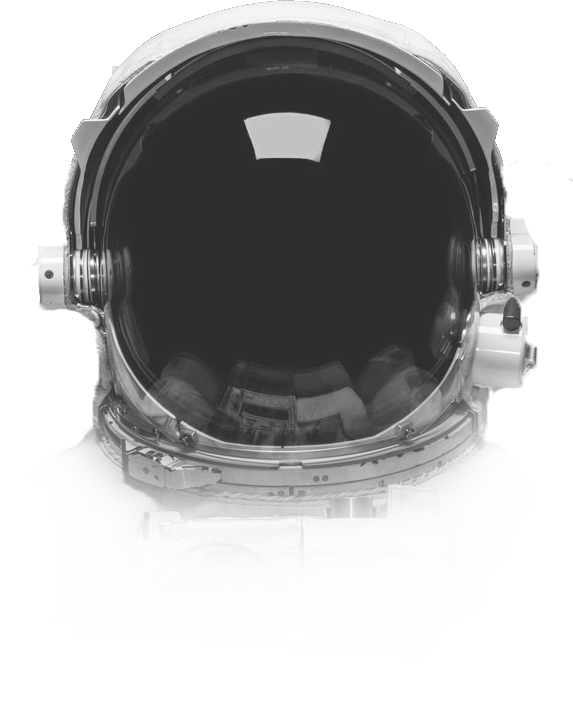

Земля

Третья планета от Солнца, Земля - это водный мир, с двумя третями планеты, покрытой океаном. Это единственный известный в мире мир. Атмосфера Земли богата жизнеспособным азотом и кислородом. Поверхность Земли вращается вокруг своей оси со скоростью 1532 фута в секунду (467 метров в секунду) - чуть более 1000 миль в час (1600 км / ч) - на экваторе. Планета замирает вокруг Солнца со скоростью более 18 миль в секунду (29 км в секунду).
Орбитальные характеристики Земля вращается на воображаемой линии, называемой осью, которая проходит от Северного полюса до Южного полюса, а также вращается вокруг Солнца. Для завершения вращения на его оси требуется 23,439 часа, а для завершения орбиты вокруг Солнца - примерно 365,26 дня. Ось вращения Земли наклонена относительно плоскости эклиптики, воображаемой поверхности через орбиту Земли вокруг Солнца. Это означает, что северное и южное полушария иногда указывают на солнце или вдали от солнца в зависимости от времени года, изменяя количество света, которое они получают, и вызывают сезоны.
Четвертая планета от солнца - это холодное, пыльное место. Пыль, оксид железа, придает планете красноватый оттенок. Марс разделяет сходство с Землей: он скалистый, имеет горы и долины, а штормовые системы варьируются от локализованных пыльных дьяволов, похожих на торнадо, до пыльных бурь на планете. Снег на Марсе. И на Марсе есть водяной лед. Ученые считают, что это было когда-то мокрой и теплой, хотя сегодня она холодная и пустынная. Атмосфера Марса слишком тонкая, чтобы жидкая вода существовала на поверхности в течение любого периода времени. Ученые считают, что у древнего Марса были бы условия для поддержки жизни, и есть надежда, что на Красной планете могут существовать признаки прошлой жизни - возможно, даже настоящей биологии.
Орбитальные характеристики Ось Марса, как и Земля, наклонена по отношению к солнцу. Это означает, что, подобно Земле, количество солнечного света, падающего на определенные части планеты, может сильно варьироваться в течение года, давая времена Марса. Тем не менее, времена, когда Марс переживает более экстремальные, чем Земля, потому что эллиптическая, овальная орбита красной планеты вокруг Солнца более вытянута, чем у любой из других крупных планет. Когда Марс ближе всего к солнцу, его южное полушарие наклоняется к солнцу, давая ему короткое, очень жаркое лето, в то время как северное полушарие испытывает короткую холодную зиму. Когда Марс находится дальше всего от Солнца, северное полушарие наклоняется к солнцу, давая ему длинное, мягкое лето, в то время как южное полушарие испытывает долгую холодную зиму. Наклон оси Марса дико колеблется со временем, потому что он не стабилизируется большой луной, например, на Земле. Это привело к разным климатам на ее поверхности через свою историю. Исследование, проведенное в 2017 году, предполагает, что изменение наклона также повлияло на выброс метана в атмосферу Марса, что вызвало временные периоды потепления, которые позволяли воде течь.
Пятая планета от Солнца, Юпитер огромна и является самой массивной планетой в нашей солнечной системе. Это преимущественно газообразный мир, в основном водород и гелий. Его закрученные облака красочны благодаря различным типам следовых газов. Большая особенность - Великое Красное Пятно, гигантский шторм, который бушевал сотни лет. Юпитер имеет сильное магнитное поле и с десятками лун, он немного похож на миниатюрные солнечные системы.
Физические характеристики Юпитер - самая массивная планета в нашей солнечной системе, более чем в два раза более массивная, чем все другие планеты, и если бы она была примерно в 80 раз более массивной, она фактически стала звездой вместо планеты. Его атмосфера похожа на атмосферу солнца, состоящую в основном из водорода и гелия, и с четырьмя большими лунами и множеством меньших спутников вокруг нее, Юпитер сам по себе является своего рода миниатюрной солнечной системой. Все сказанное, огромный объем Юпитера мог содержать более 1300 Земли.
Шестая планета от солнца известна больше всего за свои кольца. Когда Галилей Галилей впервые изучил Сатурн в начале 1600-х годов, он думал, что это объект с тремя частями. Не зная, что он видит планету с кольцами, тупой астроном вошел в маленький рисунок - символ с одним большим кругом и двумя меньшими - в своей тетради как существительное в предложении, описывающем его открытие. Более 40 лет спустя Christiaan Huygens предложили, чтобы они были кольцами. Кольца изготовлены из льда и камня. Ученые еще не уверены, как они сформировались. Газообразная планета - это в основном водород и гелий. Он имеет многочисленные луны.
Физические характеристики Сатурн - газовый гигант, состоящий в основном из водорода и гелия. Сатурн достаточно велик, чтобы вмещать более 760 земных шаров и более массивный, чем любая другая планета, кроме Юпитера, примерно в 95 раз превышающая массу Земли. Однако Сатурн имеет самую низкую плотность всех планет и является единственной, менее плотной, чем вода - если бы была ванна, достаточно большая, чтобы удерживать ее, Сатурн плавал. Желтые и золотые полосы, наблюдаемые в атмосфере Сатурна, являются результатом сверхбыстрых ветров в верхней атмосфере, которые могут достичь около 1,00 миль / ч (1800 км / ч) вокруг своего экватора в сочетании с теплом, поднимающимся изнутри планеты. Сатурн вращается быстрее, чем любая другая планета, кроме Юпитера, завершая поворот примерно каждые 10 с половиной часов. Это быстрое прядение заставляет Сатурн выпучиваться на своем экваторе и сглаживаться на его полюсах - планета на 8 000 миль (13 000 километров) шире на своем экваторе, чем между полюсами.
Седьмая планета с Солнца, Уран - странный. Это единственная гигантская планета, экватор которой находится почти под прямым углом к ее орбите - она в основном вращается на боку. Астрономы полагают, что планета давно столкнулась с каким-то другим объектом размером с планету, вызывая наклон. Наклон приводит к экстремальным сезонам, который длится 20 с лишним лет, а солнце бьется на одном полюсе или в течение 84 земных лет. Уран примерно того же размера, что и Нептун. Метан в атмосфере дает Уран свой сине-зеленый оттенок. Он имеет множество лун и слабых колец.
Физические характеристики Уран сине-зеленого цвета, результат метана в его преимущественно водородно-гелиевой атмосфере. Планета часто называют ледяным гигантом, так как 80 процентов или более ее массы состоят из жидкой смеси воды, метана и аммиачных льдов. В отличие от других планет Солнечной системы, Уран наклонен до сих пор, что он по существу вращает солнце на своей стороне, а ось его вращения почти указывает на звезду. Эта необычная ориентация может быть связана с столкновением с корпусом размером с планету или несколькими небольшими телами вскоре после его образования. Этот необычный наклон приводит к появлению экстремальных сезонов примерно 20 лет, что означает, что почти четверть уранского года, равная 84 земным годам, солнце светит прямо над каждым полюсом, оставляя вторую половину планеты долгое время , темная, холодная зима. Уран имеет самую холодную атмосферу любой из планет в Солнечной системе, хотя она не самая далекая от солнца. Это потому, что Уран не имеет никакого внутреннего тепла, чтобы дополнить тепло солнца.
Восьмая планета с Солнца, Нептун известна сильными ветрами - иногда быстрее, чем скорость звука. Нептун далеко и холоден. Планета находится в более чем 30 раз от Солнца, как Земля. Он имеет скалистое ядро. Нептун был первой планетей, которая, как прогнозируется, существовала, используя математику, прежде чем она была обнаружена. Неравномерности на орбите Урана привели к тому, что французский астроном Алексис Бувард предположил, что некоторые другие могут оказывать гравитационное буксир. Немецкий астроном Иоганн Галле использовал вычисления, чтобы помочь найти Нептуна в телескопе. Нептун примерно в 17 раз массивнее Земли.
Физические характеристики Облачный покров Нептуна имеет особенно яркий синий оттенок, отчасти обусловленный еще неидентифицированным соединением и результатом поглощения красного света метаном в планетах в основном атмосферой водород-гелий. Фотографии Нептуна раскрывают голубую планету, и ее часто называют ледяным гигантам, так как она обладает толстой, грязной жидкой смесью воды, аммиака и метановых льдов в ее атмосфере и примерно в 17 раз превышает массу Земли и почти в 58 раз превышает ее объем, согласно информационному бюллетеню НАСА. NASA говорит, что скалистый сердечник Нептуна считается примерно равным массе Земли. Несмотря на свое большое расстояние от солнца, а это означает, что солнечный свет становится мало, чтобы помочь согреться и прогнать его атмосферу, ветер Нептуна может достигать до 1500 миль в час (2400 км / ч), который наиболее быстро обнаруживается в солнечной системе. Эти ветры были связаны с большой темной бурей, которую Voyager 2 проследил в южном полушарии Нептуна в 1989 году. Это овальное, вращающееся против часовой стрелки «Великое темное пятно» было достаточно большим, чтобы содержать всю Землю, и двигалось на запад со скоростью около 750 миль в час ( 1200 км / ч). Этот шторм, казалось, исчез, когда Космический телескоп Хаббла позже искал его. Хаббл также показал появление, а затем исчезновение других Великих темных пятен за последнее десятилетие. Новый был отмечен в 2016 году.
Ближайшая планета к солнцу, Меркурий лишь немного больше, чем луна Земли. Его дневная сторона выжжена солнцем и может достигать 840 градусов по Фаренгейту (450 градусов Цельсия), но на ночной стороне температура падает до сотен градусов ниже нуля. У Меркурия практически нет атмосферы для поглощения метеорных ударов, поэтому его поверхность покрыта кратерами, как луна. За свою четырехлетнюю миссию космический аппарат NASA «MESSENGER» раскрыл взгляды на планету, которая поставила под сомнение ожидания астрономов.
Физические характеристики Поскольку планета находится так близко к Солнцу, температура поверхности Меркурия может достигать обгоревшего 840 градусов по Фаренгейту (450 градусов Цельсия). Однако, поскольку в этом мире нет реальной атмосферы, чтобы задерживать любое тепло, ночью температура может упасть до минус 275 F (минус 170 градусов), колебание температуры более 1100 градусов F (600 градусов C), наибольший в солнечной системе. Меркурий - самая маленькая планета - она лишь немного больше, чем луна Земли. Поскольку у него нет существенной атмосферы, чтобы остановить удары, планета окружена кратерами. Около 4 миллиардов лет назад астероид шириной около 60 миль (100 километров) ударил Меркурия с ударом, равным 1 триллиону 1-мегатонной бомбы, создав обширный ударный кратер шириной около 960 миль (1550 км). Известный как бассейн Калорис, этот кратер мог удерживать все штаты Техас. Еще одно большое влияние, возможно, помогло создать нечетное вращение планеты.
Вторая планета от солнца, Венера ужасно жаркая, даже более горячая, чем Меркурий. Атмосфера токсична. Давление на поверхности сокрушит и убьет вас. Ученые описывают ситуацию Венеры как беглый парниковый эффект. Его размер и структура похожи на Землю, толстая, токсичная атмосфера Венеры ловушки тепла в беглый «парниковый эффект». Как ни странно, Венера медленно вращается в противоположном направлении от большинства планет. Греки считали, что Венера - это два разных объекта: одно на утреннем небе и другое по вечерам. Потому что он часто ярче любого другого объекта на небе - кроме солнца и луны - Венера создала много отчетов о НЛО.
Физические характеристики Венера - самая горячая планета в солнечной системе. Хотя Венера - не самая близкая к Солнцу планета, ее плотная атмосфера захватывает тепло в беглой версии парникового эффекта, который согревает Землю. В результате температура на Венере достигает 870 градусов по Фаренгейту (465 градусов Цельсия), более чем достаточно горячей, чтобы расплавить свинец. Зонды, что ученые приземлились, выжили всего за несколько часов до того, как их уничтожили. У Венеры также есть адская атмосфера, состоящая в основном из углекислого газа с облаками серной кислоты, и ученые только обнаружили в атмосфере следовые количества воды. Атмосфера тяжелее, чем у любой другой планеты, что приводит к поверхностному давлению в 90 раз больше, чем к Земле. Невероятно, однако, что в начале истории Венеры планета, возможно, была пригодна для жилья, согласно моделям исследователей НАСА в Институте космических исследований Годдарда.
Земля
Узнать подробнее